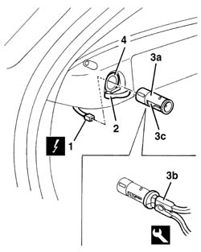

7065C85 rear power point - r r
- Path
- Procedures > 70 FITTINGS > 7065 SEAT BELTS AND ACCESSORIES > 7065C accessories and decorations > 7065C85 rear power point - r r
- Kind
- repair procedure (removal / refitting; the operation number is the code)
- Applies to
- all engines; all production periods
- Interactive page
- https://sloeber94.github.io/elrnDB-a156/en/#/3238993
Applies to: all engines; all production periods; only with equipment: Station Wagon
 Removing
Removing
 Refitting
Refitting1. Disconnect the electrical connections.
 | Name | Connector |
|---|---|---|
1 | Rear power point |
2. Open the socket cover.
3. Wtihdraw the socket (3a) (cigarette lighter type) using the special tool (3b).
 | Name | Country |
|---|---|---|
3b | Pliers | 1.823.028.000 |
4. If necessary, remove the ring nut with cover from its seating.

Applies to: all engines; all production periods; only with equipment: Station Wagon
Refitting
RemovingCheck that the socket (cigarette lighter type) is undamaged.
If removed, fit the ring nut with cover.
Fit the socket.
Connect the electrical connection.
Check that the socket is working.
Close the socket cover.